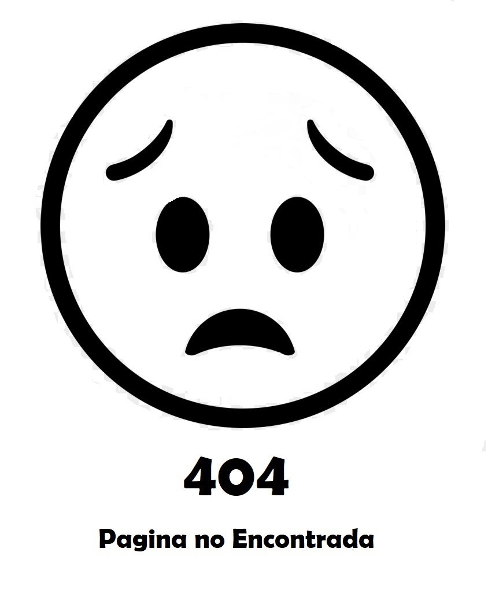

<!-- ============================================================== -->
<!-- Main wrapper - style you can find in pages.scss -->
<!-- ============================================================== -->
<section id="wrapper" class="error-page">
    <div class="error-body text-center">
        <div>
            
        </div>
        <a (click)="regresar()" class="btn btn-info waves-effect waves-light m-b-40" style="color: white;">Regresar</a> </div>
    <footer class="footer text-center">© {{year}} PsicoAndy M&D.</footer>
</section>
<!-- ============================================================== -->
<!-- End Wrapper -->
<!-- ============================================================== -->